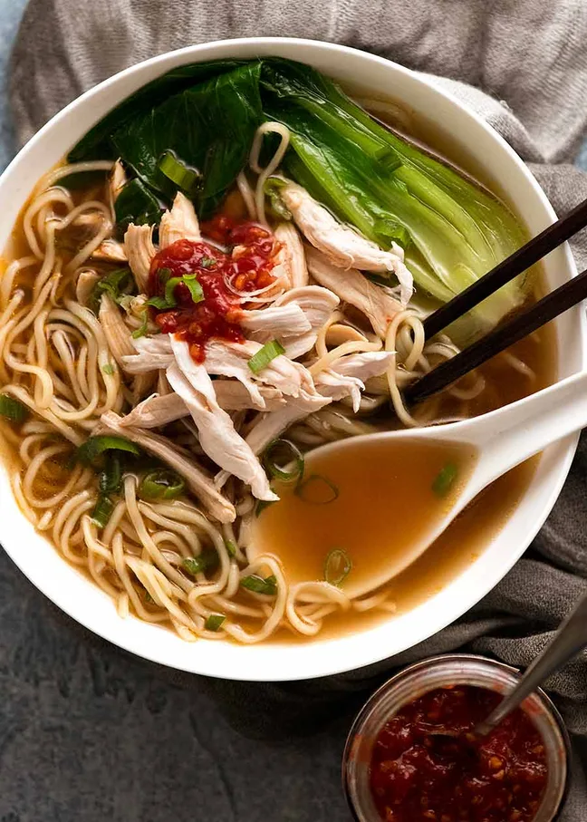

Home
Chinese Noodle Soup

This is a picture of the finished Chinese Noodle Soup made by Nagi from RecipeTinEats
Now this recipe was an treasure to find, and if you follow her way to make the broth homemade,
then it really brings out the flavor! But if you just don't have the time for that, then
add in a low sodium instant stock, and some sherry, and it is just such a nice hearty soup to
cozy up with.
As you can see, this is a nice version of chicken noodle soup that gives really rich, and
deep flavors, and honestly the wine and a dash of toasted sesame oil brings it right
to life! Too much of the sesame oil, and it"ll overpower the rest of flavors in the soup.
Then you can add whatever veggies you have in your fridge or freezer, and away you go!
Ingredients
- half inch piece of ginger
- 1 1/2 tbsp soy sauce
- 1/4 tsp toasted sesame oil
- 1-2 tsp dash of sugar
- 2 cloves of garlic- but you can add more until
it feels right for your soul!
- 3 cups of low-sodium chicken broth
- 1 1/2 - 2 tbsp Chinese cooking wine, or a dry sherry, or any
wine you have
- noodles: whatever are your favorite, but egg
noodles are best!
- vegetables: mini or baby bok choy are great,
but really anything you want!
- Meat: any meat you want, sausages are great!
Steps to make this dish!
- First is to boil the stock and get that simmering.
- Add in the soy sauce, wine, sugar, and sesame oil
- Cut up the ginger into small slices and smash the garlic with the flat of the blade,
cut up into small pieces, and put both into pot.
- Simmer everything for 10 minutes, and enjoy with noodles and veggies.
- For the bok choy, if you cut into 1/4's, and simmer the pieces in the pot of water that cooked the
noodles for a few minutes, it'll make them softer and taste much better!